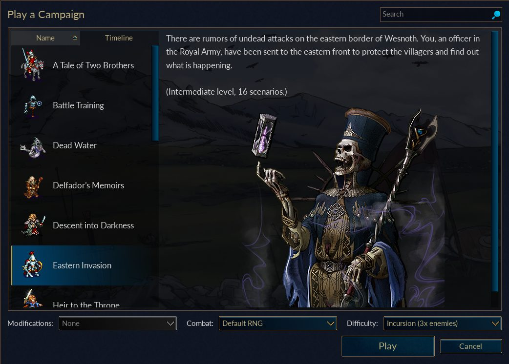
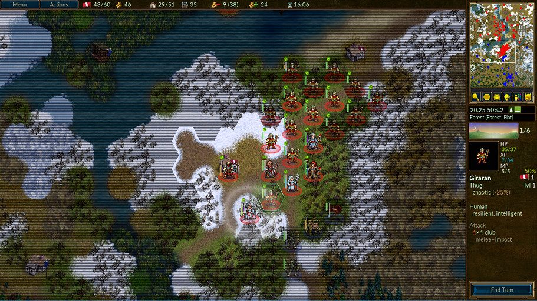
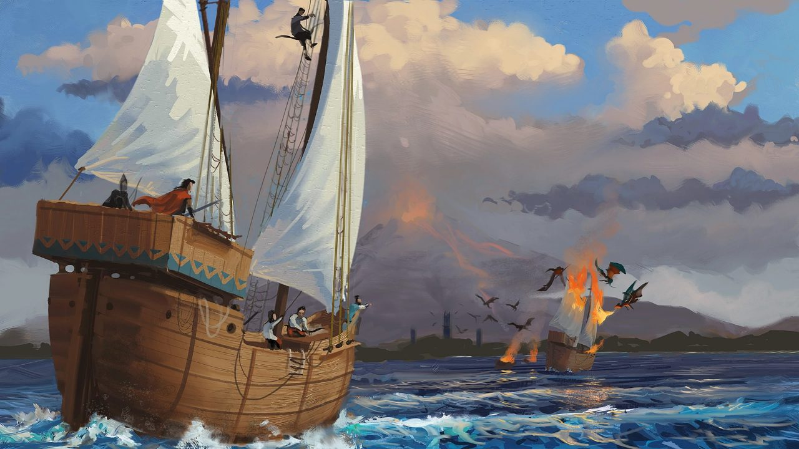

What the game is
Move units on hexes, capture villages, recruit armies, exploit terrain, and use day/night cycles to attack when your faction is strongest.
A turn-based fantasy tactics game with hex maps, campaigns, villages, terrain defense, units that level up, and both local and online-style multiplayer modes.
Choose Wesnoth for slower, chess-like battles where positioning and timing matter more than fast controls. It is a strong family/strategy needs game files because a single game can be thoughtful without being hardware hungry.
Move units on hexes, capture villages, recruit armies, exploit terrain, and use day/night cycles to attack when your faction is strongest.
The official website and a large wiki/manual mirror are present on GannanNet, including the Wesnoth manual, download pages, and local Windows/macOS installers.
No native installers were found in the mirror. The next step is caching desktop/Android packages and testing a real multiplayer or hotseat session.
Battle for Wesnoth 1.18.7 stable desktop clients are stored locally. Hotseat and LAN join play smokes are still the next next check.
Stable 64-bit Windows installer.
Download EXEStable macOS package.
Download DMGThe Wesnoth website/wiki/manual mirror is already local.
Open manualSelected screenshots are cached inside this hub so the arcade can explain the game offline.



This is a starter guide, not a full manual. Use the local mirror links for deeper offline reading where available.
Villages heal units and fund recruits. Losing village control often means losing the long game.
Forests, hills, mountains, water, and villages change hit chances. Put units where they are hard to kill.
Lawful units fight better by day, chaotic units fight better at night, and neutral units are steady.
Units gain XP and advance. Keeping experienced units alive is often more valuable than one risky kill.
Use different damage types and movement profiles rather than building one unit forever.
These links point at the current GannanNet mirror. If the internet is down, the local mirror links should still work.
Official website/wiki mirror and Battle for Wesnoth project pages.
See ATTRIBUTION.txt for screenshot and source notes.
Promotion path: run a hotseat smoke and a local multiplayer smoke with two clients. Only after that should this be marked as play-ready rather than research-ready.
Admin expectation: this probably does not need a persistent server for family play if hotseat works well, but a LAN multiplayer host profile could still be added later.
This tells players whether the entry is ready to play or only ready to research.
/var/www/html/mirrors/wesnoth, about 159 MB
WesnothManual.html is mirrored
Test cached clients with hotseat/LAN multiplayer